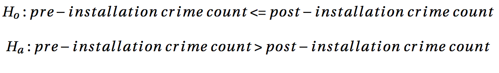
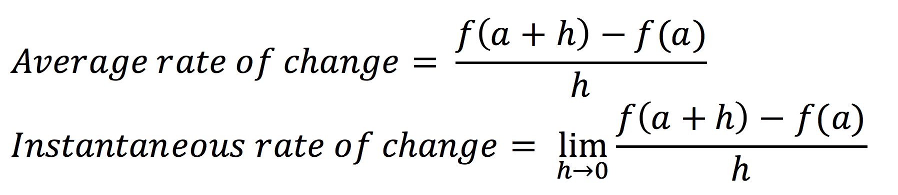

Blue Light Camera Impact Analysis
Background
- Rochester Policement Department (RPD) purchased/installed 50 cameras in 2008.
- Up to 2010, a total of 82 cameras were installed .
- Current number of cameras is 136 (Year 2017).
Data
Camera Data
| Longitude | Latitude | ObjectID | Address | Type | Program | Year | Month | section |
|---|---|---|---|---|---|---|---|---|
| -77.6127 | 43.17339 | 3 | N Clinton Ave and Scrantom St | Video | BlueLight | 2009 | 7 | 7 |
| -77.6031 | 43.18073 | 4 | Ave D and Bauman St | Video | BlueLight | 2009 | 7 | 5 |
Crime Data
| FullAddress | Latitude | Longitude | CrimeType | Section | Description | OccurDate | Quarter |
|---|---|---|---|---|---|---|---|
| 810 BROWN ST | 43.15069 | -77.6355 | BURGLARY | 3 | BURGLARY | 2/1/2005 | 1 |
| 501 GENESEE ST | 43.14028 | -77.6372 | LARCENY | 5 | PETIT LARCENY | 2/1/2005 | 1 |
- All-crime dataset of 356,696 rows.
- Felony dataset of 91,837 rows.
- Batch 2008: the batch of cameras that were installed by the end of 2008.
- Batch 2016: the batch of cameras that were installed around July 2016.
- Control group: 2,358 road intersections that are at least 300 meters far away from any of installed Blue Light cameras.

Exploratory Analysis
The goal of this part is to explore interactions between crime distribution and Blue Light cameras as well as general patterns hidden in the crime records.

In Figure 3, the left contour plot demonstrates the density distribution of all-crime activities from 2005 to 2008, which in this project is treated as pre-blue-light period, while the right plot shows the distribution in the period from 2009 to 2012, during which the batch 2008 cameras had taken effect for a while.
On one hand, the center of city (yellow area in the center of the plots) consistently remains a hot bed of crime activities throughout the 8 years. On the other hand, some highlighted area in the left plot is no longer so in the right plot. Taking the city section of Clinton for example, which is located to the north of the city center, it was clearly one of the areas with highest crime density in the left plot, but its crime density reduced in the right plot. Meanwhile, a new hightlighted area shows up in the north of Clinton, which is the location of a Walmart supermarket frequented by crime of larceny.

Since felony activities are the main focus of this project, we also draw similar contour plots demonstrating felony distributions in the two four-year periods as shown in Figure 3. By observation, however, Figure 3 does not show any significant density shifting in the case of felony actitivities. Areas with high crime density remains, if not deteriorates to, the crime-highlighted areas during 09-12 period.

While contour maps perform well in revealing where hot areas of crime are located, they do not tell much about quantitative variation of crime counts in the dimension of time. Therefore we also made time-series plots, as shown in Figure 4, using all-crime and felony datasets respectively.
When crime records are summarized on monthly base, a strong patten of seasonality is revealed. The frequency of crime activities, no matter it is for all-crime or only felony, tends to peak in summer time, and then dips down to the bottom during December and January. More interesting than the pattern of seasonality is a decreasing trend in both all-crime and felony activities. The patterns can be observed in Figure 4.
Figure 5: Crime by Type for Effective and Ineffective Cameras
Figure 6: Top: Crime Yearly Count Around Effective Clusters; bottom:Crime Yearly Count Around Ineffective Clusters
Methods
Crime Count
In order to quantify a camera's impact on its nearby crime activities we first developed a measuring metric crime count. Crime count is the sum of reports of crime activities that happened within the distance of r away from a location l during a period of time t , where r is the radius of a circle centered at l, which stands for the geographical coordinates of a camera or control intersection, and t is a time interval, which could be one month, three months, etc. In this project r is fixed at 50 meters, while t is various across different hypothesis tests.
Control Group
As it can be seen in figures, crime activities were decreasing across the city. Empirically speaking, many factors such as economy, demography, government policies and even some unconceivable elements can be attributed to the decreasing trend. With respect to this project, we must take into account the confounding effects of these factors on crime. To overcome this challenge the control group which consists of 2,358 intersections are brought in and the crime activities near control group are used as a benchmark in comparison with those near cameras. As mentioned earlier, a 300-meter threshold is set in the process of choosing control intersection.
Hypothesis Tests
If a Blue Light camera has solid impact on nearby crimes, then a decreas- ing pattern of crime is supposed to be observable along a certain period of time. Otherwise, the camera0s impact on crime should be considered as obscure. Based on this assumption we designed a one-sided hypothesis in the following expression, where prior crime count stands for a sequence of counts of crimes recorded prior to the stallation of a batch of cameras, and post crime count for the post-installtion data.

Rate of Change
Consider the case where the numerator f of a rate is a function f(a) where a happens to be the denominator of the rate. A rate of change of f with respect to a (where a is incremented by h) can be formally defined in two ways:

where f(x) is the function with respect to x over the interval from a to a+h. An instantaneous rate of change is equivalent to a derivative. In this research h is time period, f(x) is crime count during this period.
Figure 7: Yearly Rate of Change of Crimes in City Section 7 (Clinton)
Results
In this section we conducted a series of one-sided paired t-tests and Wilcoxon rank sum tests to assess the null hypothesis. In t-tests, for each camera in each batch we computed its felony crime count within time interval tstarting at Tinstall,thetimepointofcamerainstallation, and paired it with the count whithin the same period one year earlier. Here t was set at three- month, six-month, and one-year respectively, and Tinstall was set at a time point upon which most of cameras in the batch had been installed. Taking the 2008 batch for example, since most of the cameras had been installed by the end of 2008, Tinstall was set at January 1st, 2009. The same crime count computation was also conducted on each intersetion in the control group. Then we implemented one-sided t-tests on the paired felony crime counts.
Table 1 and 2 enumerate the test results for batch 2008 and 2016 respectively. The paired felony crime counts of batch 2008 cameras, no matter in what time interval they were com- puted, fail to reject the null hypothesis that crime count in time interval t is less than or equal to the value one year earlier. In another word, batch 2008 cameras do not see statistically significant decrease in felony activities during a time interval t following their installation, where t is three-month, six-month, or one-year. We ended up with the same result in tests on batch 2016 cameras as shown in Table 2.
Table 1: One-Sided Paired Difference T-Test for Batch 2008 (df = 55)
| Camera Batch | Time Interval | P-Value | 95% C.I. |
|---|---|---|---|
| batch 2008 | three-month | 0.383 | [-0.246, ∞) |
| control group | three-month | 0.057 | [-0.0009, ∞] |
| batch 2008 | six-month | 0.288 | [-0.354, ∞) |
| control group | six-month | 0.001 | [0.031, ∞) |
| batch 2008 | one-year | 0.208 | [-0.286, 1.286] |
| control group | one-year | 0.560 | [-0.051, 0.094] |
Table 2: One-Sided Paired Difference T-Test for Batch 2016 (df = 18)
| Camera Batch | Time Interval | P-Value | 95% C.I. |
|---|---|---|---|
| batch 2016 | three-month | 0.250 | [-1.276, ∞) |
| control group | three-month | 3.176e-05 | [0.033, ∞] |
| batch 2016 | six-month | 0.167 | [-1.298, ∞) |
| control group | six-month | 3.427e-08 | [0.071, ∞) |
In Wilcoxon tests, we narrowed the time interval t down to one month. We first computed monthly felony crime counts from 2005 to 2016 for each camera in batch 2008. Then we conducted a sequence of 8 Wilcoxon tests for each camera. More specifically, when selecting pre-installation crime count for each test in a sequence we always included the whole dataset of pre-installation felony crime counts recorded from 2005 to 2008; On the other hand, we accumulatively added one year’s post-installation felony crime counts into pre-installation crime count. For example, in the first Wilcoxon test in a sequence, its pre-installation crime count only included monhtly crime counts in 2009, the second test contained the data in 2009 and 2010, and each following test had one more year’s post-installation crime counts than the previous one.
With data prepared, we conducted the sequence of Wilcoxon rank sum tests for each camera in order to test the null hypothesis that pre-2009 felony crime counts is greater than the post- 2009 data. The same process of compution was also implemented on the control group. We chose Wilcoxon tests over t-tests in this process because Wilcoxon tests loose the constaint of normality assumption on the monthly crime counts, which are apparantly time-series.

As a result, the sequence of tests show a trend that more members in batch 2008 rejected the null hypothesis tests as more years of post-installation monthly felony crime counts were added into post crime count. While control group showed a similar pattern in the tests, batch 2008 had faster growth in percentage (see Figure 4).
Conclusion
From 2005 to 2016, the City of Rochester saw a steady decreasing trend in crime. For all-crime activities, a peak-shifting pattern in all-crime density distribution was observed since the installation of the first batch of Blue Light cameras, while similar pattern did not show up in the case of felony activities. By conducting a series of hypothesis tests on felony records, we found that the crime count in a Blue Light camera’s viewshed within the time interval following its installation was statistically significant different from the value in the same period one year earlier. In constrast, when it came to long term patterns, more Blue Light cameras had seen statistically significant deceasing trend in felony activities within their viewshed. In another word, it takes time for a Blue Light camera to have impact on felony activities.